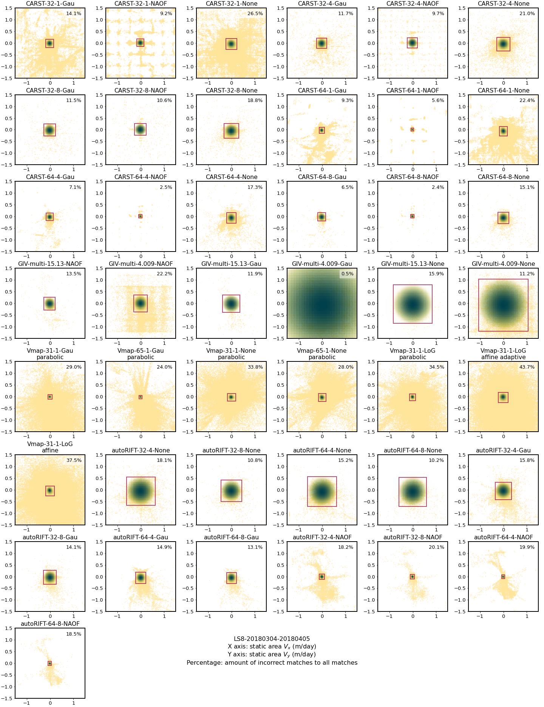
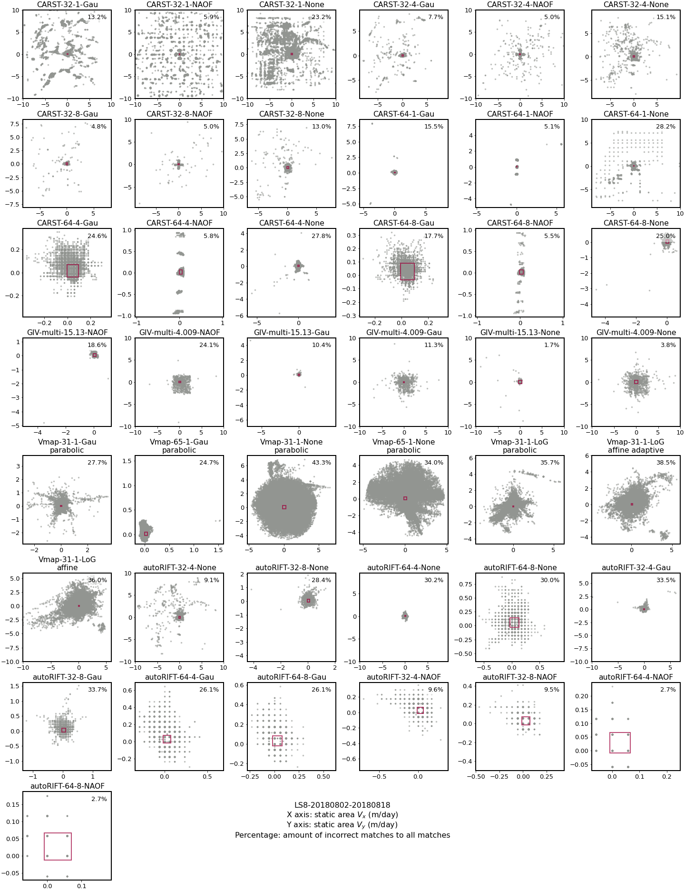
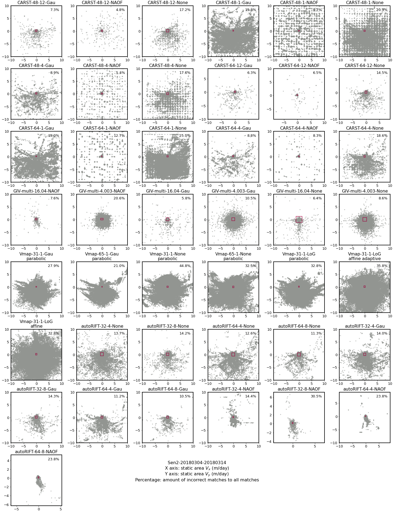
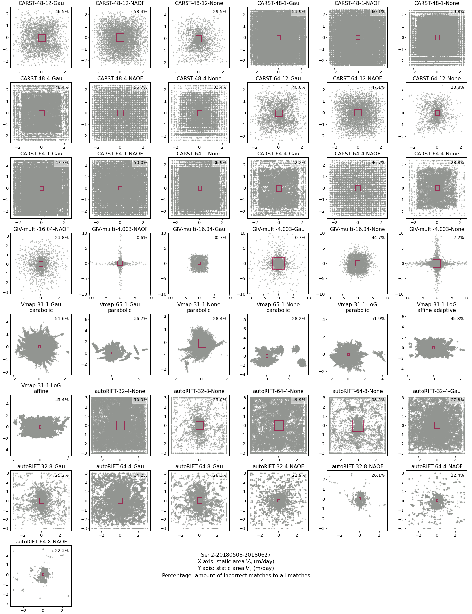
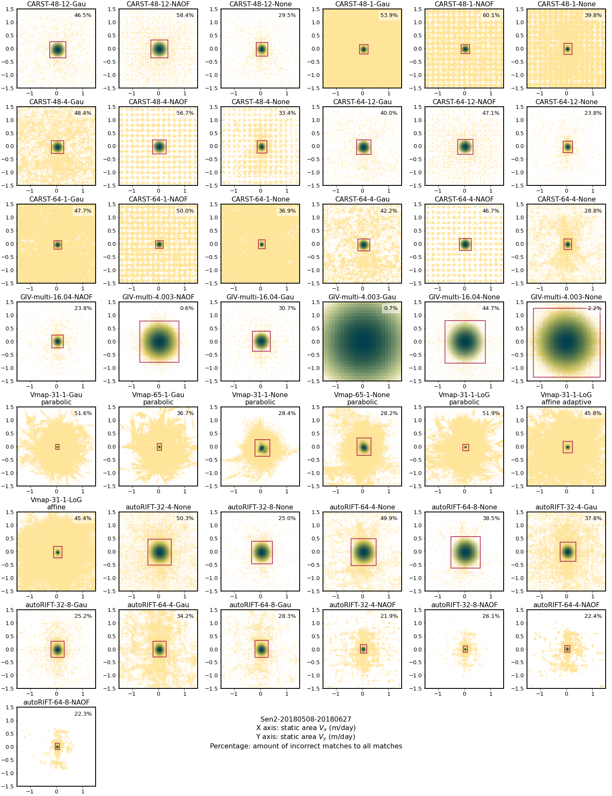

Figures S9-S16: Static area velocity analysis for all tests
Contents
Figures S9-S16: Static area velocity analysis for all tests¶
This notebooks shows the analysis of static area velocity (sometimes abbreviated as SAV in this study) with the supplemental figures in the bottom.
1. Basic information, importing modules, load data list and static-area shapefile¶
See Table S1 for all the Kaskawulsh glacier images and parameter sets used in this study.
import glaft
import matplotlib as mpl
import matplotlib.pyplot as plt
# import matplotlib.patches as patches
# from matplotlib import colors, cm
# from matplotlib.colors import ListedColormap
# import rasterio
# from rasterio.plot import show
# import numpy as np
import pandas as pd
# import geopandas as gpd
We start by loading the data list. Whichever line works for reproducing the figures.
../manifest.csv contains only the parameter table (Table S1),
and ../results_2022.csv contains both the parameter table and all the metrics calculated in this study.
# df = pd.read_csv('../manifest.csv', dtype=str)
df = pd.read_csv('../results_2022.csv', dtype=str)
Specify static area:
in_shp = '/home/jovyan/Projects/PX_comparison/shapefiles/bedrock_V2.shp'
2. Perform analysis¶
exps = {}
for idx, row in df.iterrows():
exp = glaft.Velocity(vxfile=row.Vx, vyfile=row.Vy, static_area=in_shp, kde_gridsize=60, thres_sigma=2.0)
exp.static_terrain_analysis()
exps[idx] = exp
3. Visualize results¶
Click to reveal the plot settings and the batch script.
# Font and line width settings
font = {'size' : 13}
mpl.rc('font', **font)
axes_settings = {'linewidth' : 2}
mpl.rc('axes', **axes_settings)
def plot_batch(sub_df, zoom=False, datestr=''):
"""
Plot static area velocity distribution for all the tests from the same image pair.
"""
fig, axs = plt.subplots(8, 6, figsize=(20, 26), constrained_layout=True)
n = 0
for idx, row in sub_df.iterrows():
ax_sel = axs[n // 6, n % 6]
exp = exps[idx]
if zoom:
exp.plot_zoomed_extent(ax=ax_sel)
ax_sel.set_xlim(-1.5, 1.5)
ax_sel.set_ylim(-1.5, 1.5)
else:
exp.plot_full_extent(ax=ax_sel)
# adjust extent
xmin, xmax = ax_sel.get_xlim()
ymin, ymax = ax_sel.get_ylim()
newmin = max(min(xmin, ymin), -10)
newmax = min(max(xmax, ymax), 10)
ax_sel.set_xlim(newmin, newmax)
ax_sel.set_ylim(newmin, newmax)
ax_sel.set_aspect('equal', adjustable='box')
# show incorrect match percentage
ax_sel.text(0.95, 0.95, '{:.1f}%'.format(exp.outlier_percent * 100), ha='right', va='top', transform=ax_sel.transAxes, backgroundcolor=(1, 1, 1, 0.5))
#### title label
templatesize = row['Template size (px)']
# change long GIV label "varying: multi-pass" to "multi"
templatesize = 'multi' if templatesize == 'varying: multi-pass' else templatesize
if row.Software == 'Vmap':
label = '-'.join((row.Software, templatesize, row['Pixel spacing (px)'], row.Prefilter)) + '\n' + row.Subpixel
else:
label = '-'.join((row.Software, templatesize, row['Pixel spacing (px)'], row.Prefilter))
ax_sel.set_title(label)
####
n += 1
# delete empty axes
for i in range(n, 48):
ax_sel = axs[i // 6, i % 6]
fig.delaxes(ax_sel)
# legends
fig.text(0.5, 0.06,
'{}\nX axis: static area $V_x$ (m/day) \nY axis: static area $V_y$ (m/day) \nPercentage: amount of incorrect matches to all matches'.format(datestr),
fontsize=16, ha='center')
return fig, axs
To reproduce the figures, uncomment and run the cell below.
# for datestr in ['LS8-20180304-20180405', 'LS8-20180802-20180818', 'Sen2-20180304-20180314', 'Sen2-20180508-20180627']:
# sub_df = df.loc[df['Date'] == datestr]
# fig, axs = plot_batch(sub_df, zoom=False, datestr=datestr)
# fig.patch.set_facecolor('xkcd:white')
# fig.savefig('figs/{}-SAV-full.png'.format(datestr))
# fig, axs = plot_batch(sub_df, zoom=True, datestr=datestr)
# fig.patch.set_facecolor('xkcd:white')
# fig.savefig('figs/{}-SAV-zoomed.png'.format(datestr))
Figure S9. Static terrain velocity distribution of the pair LS8-20180304-20180405 (full extent).

Figure S10. Static terrain velocity distribution of the pair LS8-20180304-20180405 (zoomed with kernel density estimation).

Figure S11. Static terrain velocity distribution of the pair LS8-20180802-20180818. (full extent).
 Figure S12. Static terrain velocity distribution of the pair
Figure S12. Static terrain velocity distribution of the pair LS8-20180802-20180818. (zoomed with kernel density estimation).

Figure S13. Static terrain velocity distribution of the pair Sen2-20180304-20180314. (full extent).
Figure S14. Static terrain velocity distribution of the pair Sen2-20180304-20180314. (zoomed with kernel density estimation).

Figure S15. Static terrain velocity distribution of the pair Sen2-20180508-20180627. (full extent).

Figure S16. Static terrain velocity distribution of the pair Sen2-20180508-20180627. (zoomed with kernel density estimation).
4. Save results¶
for idx, exp in exps.items():
df.loc[idx, 'SAV-uncertainty-x'] = exp.metric_static_terrain_x
df.loc[idx, 'SAV-uncertainty-y'] = exp.metric_static_terrain_y
df.loc[idx, 'SAV-peak-x'] = exp.kdepeak_x
df.loc[idx, 'SAV-peak-y'] = exp.kdepeak_y
df.loc[idx, 'SAV-outlier-percent'] = exp.outlier_percent * 100
df.to_csv('../results_2022.csv', index=False)